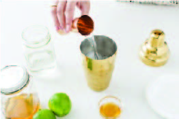
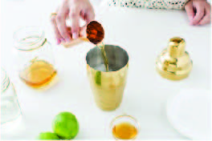
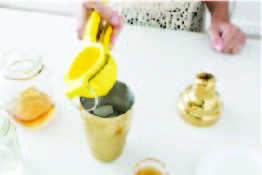
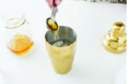
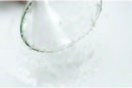
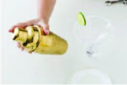
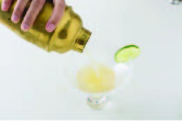
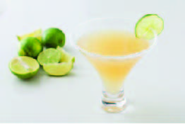

Classic Margarita Recipe
One ounce of freshly squeezed lime juice
1.5 oz of silver tequila
1 oz of Orange cognac liqueur
Kosher salt
Lime wheel
Martini glass or cocktail glass
Classic Margarita Tutorial

1. Fill a cocktail shaker 2/3 to 3/4 full with ice.
Pour 1 to 2 parts tequila into the shaker.

2. Add Orange Cognac liqueur.

3. Add one part fresh lime juice to the shaker.

4. Add in Honey or Agave.

5. Salt your glass’s rim. Pour some coarse
(kosher or sea) salt onto a plate. Garnish with a lime.

6. Shake vigorously.

7. Pour the drink from the shaker into your glass.

8. Enjoy!
Tutorial video